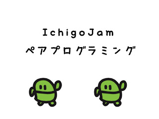
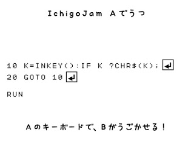
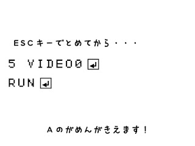
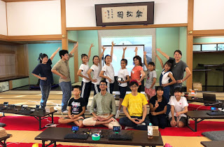
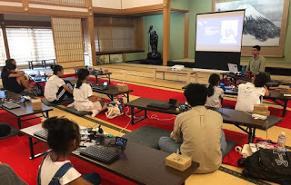
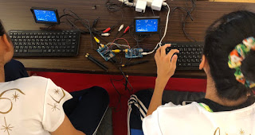

ZENIT ARCHIVE
ZenIT with IchigoSoda for Beginners
Sep 23, 2018
---From Taisuke Fukuno's blog post---
Eiheiji Town's Evolution Ambassador Amil gave a Zen x Programming workshop, combining Silicon Valley Extreme Programming style and Zen. He did at Eiheiji Town's Four Seasons Forest Cultural Center's Sanshoukaku room.
永平寺町エボリューション大使あみるによる、Zen x Programmingワークショップ。
シリコンバレースタイルと禅との融合永平寺町、四季の森会館、永平寺の傘松閣を復元した「旧傘松閣資料館」が会場！
Over 3 hours (2pm-5pm), we enjoyed a mix of programming and Zazen meditation.
14時〜17時まで、たっぷり3時間、座禅も交えたペアプログラミング、楽しんでくれました！
IT, AI, robots, seem far from humans, but actually humans made them.
The best match must be the Zen x Silicon Valley style which keeps our mind and body healthy.
IT、AI、ロボット、人から遠いようで実は人が中心。
心身を健康にする禅とシリコンバレーでのプログラミングスタイルはベストマッチ。
Using two monitors, two keyboards, and one IchigoJam with two people at the same time is Silicon Valley Pair Programming style. We did a neat trick by using one IchigoJam to relay the keyboard and video signals to the other one. (Workshop Slides PDF)
2台のモニター、2台のキーボードで1台のIchigoJamを二人で同時に使うのが、シリコンバレーのペアプログラミングスタイル。 1台のIchigoJamを中継用にちょっと細工します。（ワークショップ、スライド PDF）
The ESC key does not work on IchigoJam A because the program to transfer the keystrokes would be terminated (at which point you would have to press F5 to run it again).
IchigoJam A's left and right keys toggle the character's movement with two presses, which is a bit strange, so the game should be played with IchigoJam B.
We can fix it by changing the program to use INKEY instead of BTN.
36 K=INKEY():X=X-(K=28)+(K=29)
ESCキーは、IchigoJam Aでは効きません（キー転送用のプログラムが終わってしまうので、再度F5で動かそう）
IchigoJam A の左右キーは2度押して戻るトグル式となってちょっと操作感が違うので、ゲームするなら B で！ 下記のようにBTNをINKEYに変えることで、同じ操作感になります。
36 K=INKEY():X=X-(K=28)+(K=29)
Having fun doing pair programming to make a game for the first time!
ペアで楽しむ、ゲームづくりではじめるプログラミング！
You can also make VR to change what you see with programming! We used Oculus Go and Smartphone MR during the break time.
VRや、視界だってプログラミングできちゃうよ！と休み時間中に Oculus Go や、スマホMRの体験会。
The huge Japanese style room had fantastic pictures on the ceiling!
160畳の広大な和室、見事な天井絵！
Perfect in Autumn... The Four Seasons Forest Culture Center.
秋晴れが気持ちいい、四季の森会館でした。
Post not marked as liked
Recent Posts
See All
2019/12/15 ZenIT Workshop @ Tenryuuji - Blog Post
27
0
Post not marked as liked
2019/04/14 ZenIT Workshop @ Eiheiji - Blog Post
27
0
Post not marked as liked
University of Fukui Students Learn About the Silicon Valley and ZenIT
10
0
Post not marked as liked





